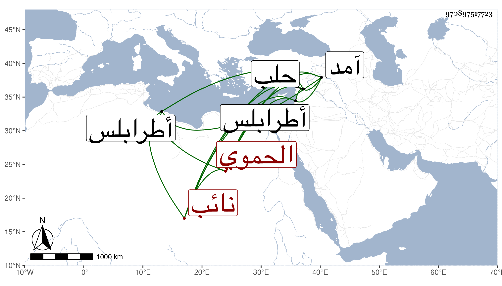

0902Sakhawi.DawLamic.ITO20230111-ara1.EIS1600.970897517723
Biography ID: 970897517723
21
طرمش بضم أوله وكسر ثالثه وآخره معجمة ومعناه قام الكمشغاوي كشبغا الحموي نائب حلب . كان دوادار سيده بها ثم صار من جملة أمراء حلب وبنى بها نقوشا منها جامعا مليحا ثم نقله الظاهر برقوق إلى حجوبية الحجاب بطرابلس وبنى بها تربة ووقف عليها أوقافا ثم توجه إلى حصن الأكراد بعد سنة آمد فتوفى بها ، وكان مشكور السيرة . ذكره ابن خطيب الناصرية وغيره .
